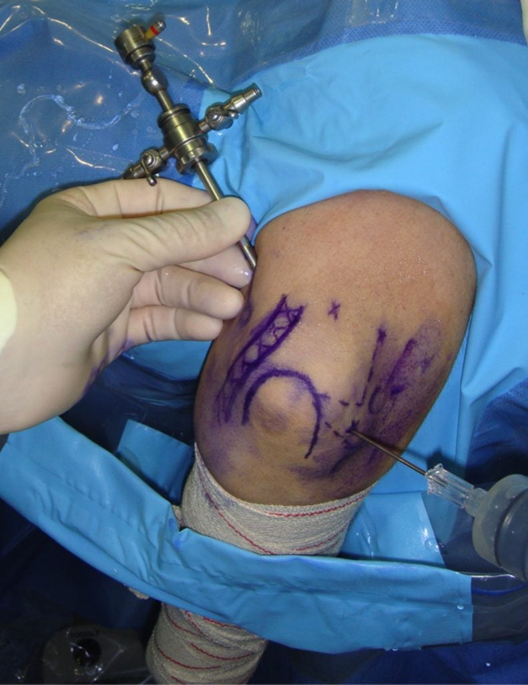

La artroscopia de codo es una técnica mínimamente invasiva. A través de pequeñas incisiones y con la ayuda de una pequeña cámara el especialista puede trabajar en el interior de la articulación del codo,
diagnosticar y tratar patologías que antes eran más difíciles de reconocer y requerían de un abordaje quirúrgico más agresivo, cosa que provocaba más complicaciones tras la cirugía. Es una intervención que se realiza bajo anestesia loco-regional
durmiendo solamente el brazo que será intervenido. En la mayoría de casos se realiza la intervención de manera ambulatoria y, transcurridas unas horas tras la intervención, el paciente se irá a casa.
